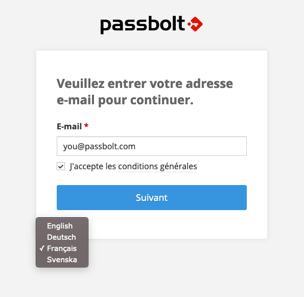
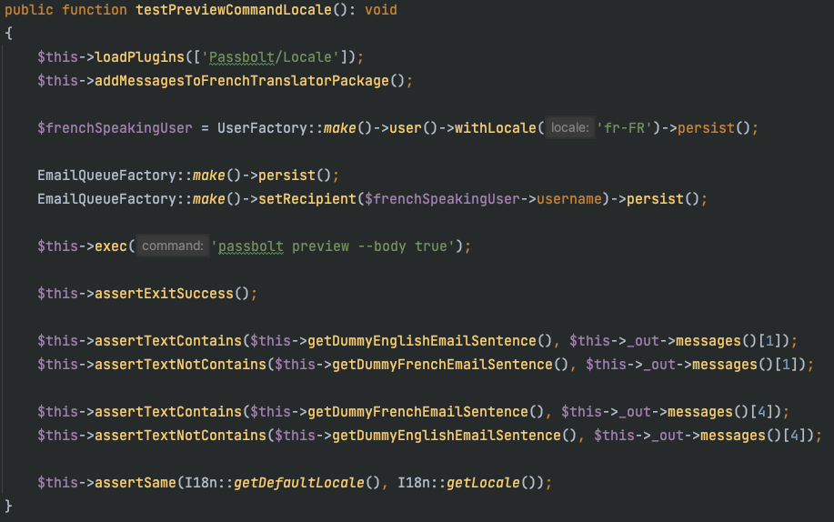
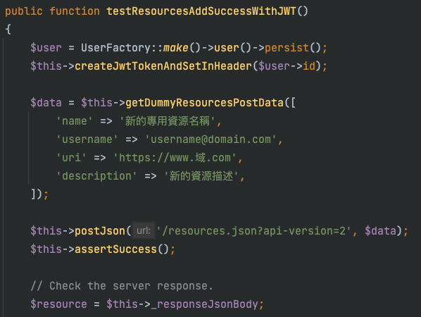

How does your CAKE test?
by Juan Pablo Ramirez
Passbolt in a nutshell
Who we are / What we do
Code insights
Architecture
/ Locale
/ JWT Authentication
Middlewares
/ Dependency injection
Testing tools
Test Suite Light / Fixtures Factories
in a nutshell
| Luxembourg | 18 employees | >100K users |
| Open source | github.com/passbolt | OpenGPG |
| Self-hosted | Entreprise | Cloud-hosted |
| RESTFull API | Web extension | Mobile app |
| Test driven | Security driven | Open source driven |
3 TECHNICAL LEADERS

|
1 PROJECT MANAGER

|
1 DESIGNER

|
1 SUPPORT

|
COMMUNITY

|
HR + MARKETING + CUSTOMER SUPPORT

|
2 BACK DEVS

|
2 FRONT DEVS

|
2 SYSOPS

|
Meet us on the Passbolt Community Forum
Check Remy's Cakefest 2020 keynote
This year
| CakePHP 3.8 to 4.2 | Security Audit |
| PostgreSQL | Locales (FR, DE and SE) |
| JWT Authentication | Dependency injection |
| Fixture Factories | PHPStan 6 + Psalm 4 |

Enter the code...
Architecture overview
Locales
EmailQueue

Json Web Token
Authentication

Vierge noire
Juan Pablo Ramirez + Nicolas Masson
Cookbook
Test Suite Light
Let's go bigger
Test Database CleanerFixture Factories
...exit the code